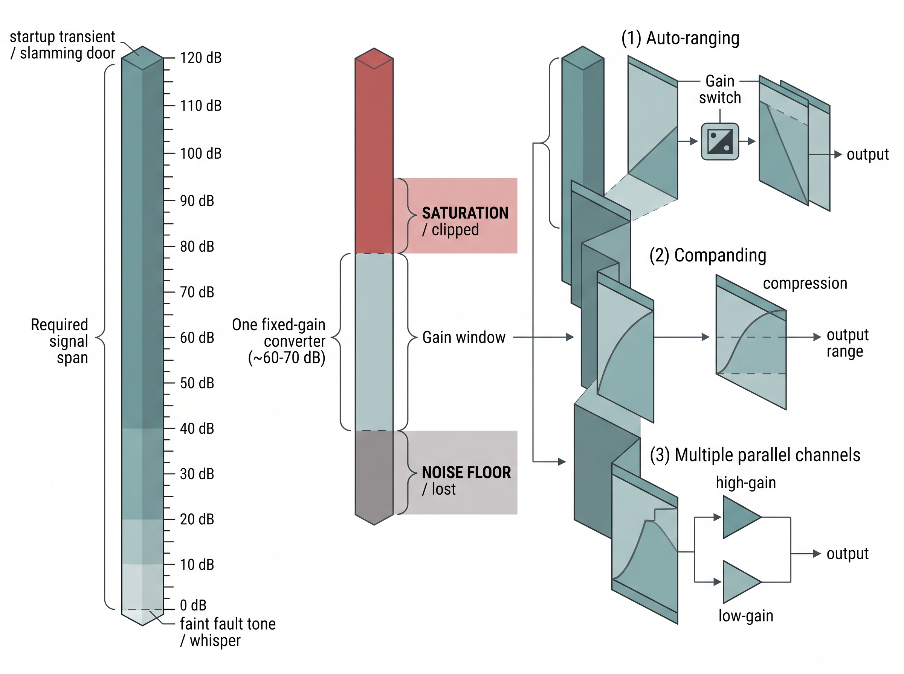

"They asked me to detect a whisper and a thunderclap with the same ear, and to tell apart two whispers a hair's breadth apart. I asked which one mattered more, and they said yes."
An Overspecified AI Agent
Three numbers that decide what you can ever measure
Before a single sample reaches a model, the hardware has already fixed the ceiling on what that model can know. Three specifications set that ceiling. Resolution is the smallest change in the world a sensor can tell apart. Sensitivity is how strongly the output moves when the world moves. Dynamic range is the span from the faintest signal the sensor can register to the largest it can take without breaking. These are not interchangeable synonyms for "quality," and confusing them can be one of the most expensive mistakes in a sensing project, because no downstream algorithm, however clever, can recover information the front end never captured. This section defines all three precisely, shows how they trade against each other, and connects each to a concrete decision you will make when specifying a system.
Section 2.1 established the measurement model \(x = h(s) + \eta\): a hidden state \(s\) passes through the sensor response \(h(\cdot)\) and is digitized into a reading \(x\). This section characterizes the properties of that pipeline that cap its information content, deliberately setting aside the statistics of the noise term \(\eta\) (the subject of Section 2.3) and the failure of \(h(\cdot)\) at its extremes (Section 2.4). We assume only basic calculus and the notion of the transfer function from the previous section. If quantization and sampling feel unfamiliar, they are treated in depth in Chapter 3.
Resolution: the smallest distinguishable change
What. Resolution is the smallest increment of the measured quantity that produces a detectable, repeatable change at the output. Why it matters. It is a hard floor on discrimination. If two states differ by less than one resolution step, the sensor reports the same value for both. No filter, no network, and no amount of averaging over those identical readings can separate them. How it arises. Two mechanisms set it. The first is quantization. An analog-to-digital converter (ADC) with \(N\) bits carves its full-scale span \(V_\text{FS}\) (the total input range from the bottom to the top of its measuring window) into \(2^N\) levels, so the least significant bit (LSB) step, the smallest change it can represent, is
$$\Delta = \frac{V_\text{FS}}{2^{N}}.$$
A 12-bit converter spanning \(\pm 2\,\text{g}\) on an accelerometer resolves \(4\,\text{g} / 4096 \approx 0.98\,\text{mg}\) per step. The second mechanism is the analog noise floor. Even before digitization, thermal and electronic noise blur the output, so a converter with more bits than the analog stage warrants only digitizes that noise. The honest figure is the effective number of bits (ENOB), which discounts the nominal bit count by the measured noise. Resolution is also spatial and temporal, not only in amplitude: a thermal camera's resolution is its pixel pitch on the scene, and a heart-rate sensor's temporal resolution is set by its sampling interval. But the size of the smallest step the output can show says nothing about how far the output actually swings when the world nudges it, and that slope is the next thing to pin down. In short: what the front end throws away in one step, no downstream algorithm can ever get back.
Common Misconception
The misconception is that resolution is a soft limit you can always beat in software by taking more samples and averaging. Averaging suppresses random noise, so it can recover detail buried under a noisy floor (and dithering, where a small known noise is added deliberately before quantizing so that averaging can resolve steps finer than one code, exploits exactly this), but when two states map to the same quantization code and the reading is steady, averaging a stack of identical numbers just returns that same number, so no amount of oversampling separates changes finer than one step in the noise-free case.
Resolution is not accuracy
A scale can report to the milligram (fine resolution) and still be five grams heavy (poor accuracy) because of a bias. Resolution answers "how finely can it distinguish," accuracy answers "how close to truth," and precision answers "how repeatable." A sensor can have any combination of the three. Bias and the other systematic errors that break accuracy are the subject of Section 2.4; here we care only about the size of the smallest step, not where that step sits relative to the truth.
Sensitivity: how hard the needle moves
What. Sensitivity is the slope of the transfer function: the change in output per unit change in the input, \(\;S = \mathrm{d}x / \mathrm{d}s\). For a linear sensor it is a single constant (a load cell might give \(2\,\text{mV/V}\) at full load; a photodiode's responsivity (its sensitivity, the output current produced per unit of incident optical power) might be \(0.6\,\text{A/W}\)). Why it matters. Sensitivity governs how a fixed amount of input maps onto the converter's steps, and so it interacts directly with resolution. A high-sensitivity sensor spreads a small physical change across many ADC codes, making that change easy to see. A low-sensitivity sensor compresses the same change into a fraction of one code, where it vanishes. How to reason about it. The catch is that sensitivity and range pull in opposite directions. Cranking gain to boost sensitivity moves faint signals up into many codes. But it also drives strong signals off the top of the scale into saturation (the ceiling where more input no longer moves the output). This is why sensitivity is a design knob, not a virtue to maximize blindly.
"Sensitive" and "high-resolution" are not the same claim, though they are linked. Sensitivity is a property of the analog transduction (slope); resolution belongs to the whole chain, including the converter (step size). Raising sensitivity lifts effective resolution only until you hit noise or saturation, where more gain buys nothing. What actually limits detection of faint signals is the ratio of sensitivity to noise, which is where Section 2.3 on signal-to-noise ratio takes over. Resolution and sensitivity each describe behavior near a single operating point; the remaining question is how wide a span of inputs the sensor can straddle before it clips at the top or vanishes into the floor at the bottom.
A wrist PPG that could see the pulse but not the breath
A wearables team building an optical heart-rate sensor using photoplethysmography (PPG) set the light-emitting diode (LED) drive current and amplifier gain to make the cardiac pulse fill most of the ADC range, which gave a clean, high-resolution pulse waveform. When they later tried to extract respiration rate, a much smaller modulation riding on the same signal, it was buried below one LSB during the day and only appeared at rest. The front end had ample sensitivity for the pulse and almost none left for the fainter respiratory component, because both shared one fixed-gain path and one converter. The fix was not a better algorithm; it was a second, higher-gain AC-coupled channel (one that blocks the large steady baseline and passes only the small fluctuation, so the amplifier's full range is spent on the part that varies) dedicated to the small signal, effectively widening the usable dynamic range. The lesson recurs across Chapter 30: the feature you forgot to spec for often lives in the range you gave away.
Dynamic range: from the faintest to the loudest
What. Dynamic range is the ratio of the largest signal a sensor can measure (its full scale, just below saturation) to the smallest it can resolve (its noise floor or one quantization step, whichever is larger). Because that ratio spans orders of magnitude, it is quoted in decibels, and for a converter it maps neatly onto bit depth:
The decibel (dB) is a logarithmic unit for the ratio of two amplitude or power quantities: for amplitudes, it is \(20\log_{10}\) of the ratio. It matters because sensor spans routinely cover many orders of magnitude, and a log scale compresses an unwieldy ratio like 1,000,000-to-1 into a readable 120 dB, while turning multiplicative gains into additive ones (every 20 dB is one factor of ten in amplitude, and 6 dB is roughly a factor of two, which is exactly why each extra converter bit adds about 6 dB). Reach for decibels whenever a ratio spans decades or you want to add stage gains by hand; keep plain linear units when the quantities are close together and an absolute difference, not a ratio, is what you care about.
$$\text{DR}_\text{dB} = 20 \log_{10}\!\left(\frac{x_\text{max}}{x_\text{min}}\right) \approx 6.02\,N + 1.76 \;\text{ for an ideal } N\text{-bit converter}.$$
Why the span decides the deployment
Why it matters. The physical world routinely presents signals across a huge range within one deployment. A microphone in a car must handle a quiet cabin and a slamming door; an automotive lidar return from a black tire at range and a retroreflective sign differ by many orders of magnitude; an inertial measurement unit (IMU) on a drone sees both gentle hover drift and the shock of a hard landing. If the required span exceeds the sensor's dynamic range, you are forced to choose which end to sacrifice, and something important gets clipped or lost in the noise. How to extend it. When one fixed setting cannot cover the span, systems use auto-ranging (switching gain on the fly, as a camera does with exposure), companding (compressing large signals nonlinearly), or multiple parallel channels. Each buys range at the cost of complexity, latency, or a discontinuity the downstream model must be told about. Note that the floor is set by noise (Section 2.3) and the ceiling by saturation (Section 2.4); dynamic range is the clean summary of the two you own from this section. Figure 2.2.1 illustrates Dynamic-range extension: covering a span wider than one converter can hold.

Checkpoint
So far: resolution is the smallest change the sensor can distinguish, sensitivity is how far the output moves per unit of input, and dynamic range is the span from the noise floor up to saturation that the two together must be able to cover.
import numpy as np
def adc_specs(v_full_scale, n_bits, noise_rms):
step = v_full_scale / (2 ** n_bits) # quantization resolution (LSB)
enob = n_bits - np.log2(max(noise_rms / step, 1.0)) # bits lost to noise
dr_db = 20 * np.log10(v_full_scale / max(noise_rms, step))
return step, enob, dr_db
for bits in (8, 12, 16):
step, enob, dr = adc_specs(v_full_scale=4.0, n_bits=bits, noise_rms=3e-3)
print(f"{bits:2d}-bit: step={step*1e3:7.3f} mV ENOB={enob:4.1f} DR={dr:5.1f} dB")Step-Through: dynamic range and ENOB for a 12-bit front end
Trace the calculation with concrete numbers for a converter with \(V_\text{FS} = 4\,\text{V}\), \(N = 12\) bits, and analog noise \(\sigma = 3\,\text{mV}\) RMS.
- Quantization step. \(\Delta = V_\text{FS} / 2^{N} = 4 / 4096 = 0.9766\,\text{mV}\) per code.
- Which floor dominates? Compare the noise \(3\,\text{mV}\) against the step \(0.9766\,\text{mV}\). The noise is larger, so it sets the true smallest distinguishable change, not the LSB.
- Bits lost to noise. \(\log_{2}(\sigma / \Delta) = \log_{2}(3 / 0.9766) = \log_{2}(3.072) = 1.62\) bits. So ENOB \(= 12 - 1.62 = 10.4\) effective bits: the last 1.6 nominal bits are digitizing noise.
- Dynamic range. The floor is \(\max(\sigma, \Delta) = 3\,\text{mV}\), so \(\text{DR} = 20\log_{10}(4 / 0.003) = 20\log_{10}(1333) = 62.5\,\text{dB}\).
- Cross-check. The ideal 12-bit figure \(6.02 \times 12 + 1.76 = 74\,\text{dB}\) is what the datasheet would claim; the \(3\,\text{mV}\) floor costs about \(11\,\text{dB}\), landing at the \(62.5\,\text{dB}\) computed above. Same story the ENOB told, in decibels.
The snippet above makes the central trade concrete. Holding the analog noise fixed at 3 mV, the 8-bit and 12-bit converters gain real resolution, but the 16-bit part reports far more nominal precision than its ENOB, because the noise floor, not the bit count, sets the true smallest distinguishable step. This is why "how many bits" is usually the wrong first question; "what is the ratio of the loudest signal I must not clip to the faintest I must still see" is the right one.
All three specifications live on a single picture, the sensor's transfer curve. Figure 2.2.1 plots output against input and reads each specification straight off the geometry: sensitivity is the slope of the curve, resolution is the height of one quantization step along it, and dynamic range is the full vertical span from the noise floor at the bottom to the saturation ceiling at the top.
Mental Model
Picture reading your weight on a bathroom scale while it sits on the deck of a rocking boat. The dial can be printed with ever-finer tick marks (the nominal bits), but the deck's constant sway jiggles the needle by a pound or two (the analog noise floor), so you can never reliably read below that jiggle no matter how fine the printing gets. The largest tick spacing you can actually trust, set by the sway and not by the printing, is the effective number of bits: adding finer marks past that point just decorates noise, exactly as extra ADC bits below the noise floor buy no real resolution.
Research Frontier
A single fixed converter forces one dynamic-range budget on the whole scene, but event cameras sidestep the ceiling by having each pixel report brightness changes on its own logarithmic scale, reaching roughly 120 dB of dynamic range where a conventional frame sensor manages 50 to 70 dB. Gehrig and Scaramuzza's "Low-latency automotive vision with event cameras" (Nature, 2024) shows this letting a driving system see both a dark tunnel mouth and bright sky in one shot without clipping either, a per-pixel auto-ranging that pushes past the fixed-gain trade this section describes; see also the DSEC high-dynamic-range driving benchmark (2021, extended through 2023) for the paired data.
Let a signal library measure ENOB for you
Estimating effective bits and dynamic range from a captured waveform the rigorous way (windowing, fast Fourier transform (FFT), locating the fundamental, summing noise-plus-distortion power, then applying the signal-to-noise-and-distortion ratio (SINAD) to ENOB relation) is 40 or more lines of careful digital signal processing (DSP) that is easy to get subtly wrong. With scipy.signal the spectral machinery is a few calls:
from scipy.signal import periodogram
f, pxx = periodogram(samples, fs=fs, window="blackmanharris")
# locate fundamental bin, sum the rest as noise+distortion, then:
# ENOB = (SINAD_dB - 1.76) / 6.02scipy.signal.periodogram with a Blackman-Harris window to obtain the spectrum from which SINAD and then ENOB are derived, replacing a hand-rolled windowed-FFT-and-power-accounting routine.The library handles windowing, the periodogram normalization, and spectral leakage suppression; you supply the bin bookkeeping and the final formula. Roughly a 40-line custom routine becomes about 6 lines plus the SINAD arithmetic.
Matching the three to the task
Pick a sensor's specifications for their datasheet glamour rather than the task, and you learn of the mismatch only after deployment: the fault tone you needed to hear sits buried under a single bit, or the startup transient you forgot to budget for clips on every power-up. The three specifications are not chosen in isolation; they are matched to what the application actually needs to distinguish, and against each other. Start from the decision the system must make, translate it into a required smallest distinguishable change (this sets resolution and, through the noise floor, the needed sensitivity) and a required span of operating conditions (this sets dynamic range). Only then pick hardware. A gesture classifier on an inertial sensor needs modest resolution but wide range to survive impacts; a tremor-monitoring clinical device needs the opposite, fine resolution over a narrow band. Getting this mapping right is upstream of every model you will train, and it feeds directly into how you reason about what the resulting estimates can and cannot claim, which is the uncertainty machinery of Chapter 4.
Exercise: spec a vibration front end
You must monitor a rotating machine whose healthy vibration sits around \(0.5\,\text{m/s}^2\) RMS, whose earliest bearing-fault signature is a \(0.02\,\text{m/s}^2\) tone you must detect, and whose worst-case transient during startup reaches \(80\,\text{m/s}^2\). (a) What dynamic range, in dB, must the front end cover to see the fault tone without clipping the startup transient? (b) If your ADC has 12 real bits (ENOB), does a single fixed gain suffice, or do you need auto-ranging or a second channel? (c) Which of the three specifications is the binding constraint here, and why?
Self-check
- Explain, using the definitions, how a sensor can have excellent resolution yet be useless for detecting a faint signal. Which second specification is the culprit?
- A datasheet advertises a 24-bit ADC. Why might its effective number of bits be closer to 18, and what one measurement would you take to find out?
- Give a real deployment where widening dynamic range by raising gain would make the system worse, and say what breaks.
Try It: watch ENOB plateau on your own laptop
Prove to yourself that noise, not bit count, caps real resolution, using only numpy, scipy, and matplotlib.
- Generate a clean test tone:
fs = 100_000, a 1.007 kHz sine of amplitude 1.8 V (just inside a 4 V full scale), over about 32,768 samples. Use a non-integer number of cycles so the tone does not fall exactly on an FFT bin. - Add Gaussian analog noise before quantizing:
x = sine + np.random.normal(0, 3e-3, x.size)for a 3 mV RMS floor. - Write a quantizer that rounds to the nearest of \(2^N\) levels across the 4 V span, and run it for
Nin[6, 8, 10, 12, 14, 16]. - For each N, call
scipy.signal.periodogram(xq, fs, window="blackmanharris"), take the fundamental bin as signal power and the sum of the rest as noise-plus-distortion, form SINAD in dB, thenenob = (sinad_db - 1.76) / 6.02. - Plot ENOB against N. Watch the curve track the diagonal at low bit counts and then flatten near the value set by the 3 mV floor; then rerun with
noise = 0and confirm ENOB keeps climbing with N, isolating the noise as the cause of the plateau.
Real-World Application: HDR imaging in the iPhone camera
Apple's Smart high-dynamic-range (HDR) pipeline sidesteps a single sensor's roughly 60 to 70 dB limit by capturing a fast burst at different exposures and fusing them, so a backlit face and a bright window survive in one frame instead of one clipping to white or the other crushing to black. This is dynamic-range extension by multiple parallel captures rather than by one heroic converter, exactly the auto-ranging trade this section describes, moved into software and hidden behind the shutter button. (As of 2024, this deep-fusion approach has advanced further: Apple's Photonic Engine, introduced in 2022, applies the multi-frame fusion earlier in the pipeline on uncompressed data, and Smart HDR 5 on recent iPhones extends the same principle.)
The ear that hears a photon and a jet engine
The specification the whole section chases already exists, evolved: the human ear spans about 120 dB of dynamic range, from the faintest audible sound (a quiet whose air-pressure wiggle is near the thermal noise of the air molecules themselves) up to the threshold of pain. The quietest sound you can detect moves your eardrum by less than the diameter of a hydrogen atom, so evolution built an amplitude range of a trillion-to-one in power into a structure the size of a pea, something no single microphone-plus-converter chain matches without switching gain. The cochlea manages it by compressing nonlinearly, an organic companding scheme predating the engineering trick by a few hundred million years.
Lab: hear your microphone's dynamic range and floor
Goal. Measure, on your own laptop microphone, where the noise floor sits and how it caps the smallest sound you can distinguish, turning the abstract dynamic-range number into something you can see on a plot in 20 minutes.
Tools. Python with sounddevice (or pyaudio), numpy, and matplotlib; any built-in or USB microphone.
Steps.
- Record two seconds of silence at
fs = 48_000in a quiet room; compute the RMS in decibels relative to full scale (dBFS) as20*np.log10(rms + 1e-12). That is your noise floor. - Record a loud clap or the loudest tone your mic takes without clipping (samples pinned at \(\pm 1.0\)); its RMS in dBFS is near your ceiling.
- The difference between the two, in dB, is your usable dynamic range. Compare it against a datasheet 16-bit ideal of 98 dB.
What to vary. Move the mic closer to and farther from a fixed sound source; change the OS input gain slider; record in a silent room versus with a fan on.
What to observe. Raising input gain lifts faint sounds off the floor but pushes the clap into clipping (samples flat-topped at \(\pm 1.0\)): you are watching the sensitivity-versus-range trade live. The fan raises the floor and eats your range from the bottom, exactly as an analog noise floor eats ENOB.
What's Next
Section 2.3 opens up the noise term \(\eta\) kept sealed here. Resolution and dynamic range both bottomed out on a "noise floor" we treated as a given; the next section names the physical sources of that floor (thermal, shot, flicker, quantization), shows how they combine, and turns the vague phrase "signal-to-noise ratio" into a quantity you can compute, budget, and improve.